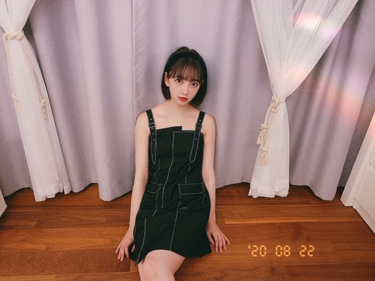

2020/0825Tueわたしがトキメク服を着たい♡
今日は
いろんなコーディネート載せます！
かわいい洋服をきるとハッピーになれるので
たくさんのジャンルの服に挑戦したいです！

brand...stella_tokyo

one-piece...IENA
前のブログで紹介した服↓

チョーカーネックレスはネットで買いました！
夏もそろそろ終わり、
秋冬服になるので秋冬服をチェックしつつ
まだまだ残りの夏を好きな洋服で彩りたいと思います
ちなみに今日は
サンローランのtシャツに
ロングパンツ、スニーカー。ラフです。
ラフも好きーーーーー
基本柄はシンプルでデザインは個性的なのがすきです
また更新します☺︎
あ、そうそう
らんぜまる、レス早くてびっくりしました！
ビビリなのね。知ってた。
わたしもだけどらんぜもなかなかよね。笑
前にうちの玄関前に虫がいて
2人で大騒ぎして30分くらい家に入れなくて
大変でした。笑
いつかお化けやしき2人で行こう。笑
らんぜまるはいつもメールの返信も早くてね〜
そして実はよくプライベート一緒に過ごすことが
おおくて。プールとかも昔行ったな〜
今年は無理だったけど
落ち着いたらまたお出かけしようね
ではは
2020/08/25 17:30


コメント(264)
ブログいつもありがとう☆ 唐突に質問
これやらないと気が済まないことってある？
缶詰め好きっすか？
次のTGC、出演おめでとう！
夜になると暑さが和らいできたね。
どんな服も似合う未央奈ちゃんは、女の子としてとても尊敬します！めっちゃ可愛い
毎回癒しを貰っております！！
自分もトキメキましたよ✨
写真とってもドキドキしました！
色んなコーディネート素敵です✴
可愛い洋服姿もエレガントです！
夏姿を目に焼き付けておきます☆
秋冬物もそろそろ気になるけど、
夏がとっても恋しくなりました♪
らんぜまる反応早かったですね！
二人共仲良くて微笑ましいです✌
秋生まれには愁いがあります～♡☺
やっぱワンピースとか来てる未央奈ちゃん可愛い…そして好きです笑自分はファッションとかオシャレとかはよく分からないけど、何となくですが可愛いとか似合うとかはわかるようになりました笑(また語彙力が…)
蘭世さん、意外とビビりだったんですね笑((初めて知った笑
じゃ、またブログ更新した時に！
ヾ(･ω･`)ﾊﾞｲﾊﾞｲ
色々な服やファッションなど沢山見れるの楽しみにしてるよ。
今日もお洒落な服ですね！！1番最初の黒いワンピース？がなかなか大人可愛いですね。私も柄は無地でシンプルな物が好きです。
夏休みが終わって学校が再開したところが多いようですね。暑さ寒さも彼岸までと言いますが、まだ暑いのは続きそうなので、学校も冷房があると良いのですが・・・。
以前ネットライブで歌われた、「ゆっくり咲く花」MV集に入ると聞いて歓喜しております。できれば配信もお願いしたいです。
ではまた。
ねっくれすがあいますね☆
ホラー映画は平気なのにお化け屋敷がダメなのが判らない
まあ、お化け屋敷はお化けで怖がらせるというより、急に飛び出して来たり大きな音を出したりビックリさせるのが多いから、そういうのが苦手な人はダメかもね
いい感じの写真が
多い堀未央奈さん
ブログ更新ありがとう⁉︎
まさに夏ありがとう写真
ですね⁉︎(^^)
いつも楽しんでます⁉︎
すごくかわいかったからアップで見たいと思ってた！
うれしいー♪
もちろん他のふたつのコーデも
かわいくて似合ってる！
髪型を変えるのもおしゃれの楽しみかたのひとつよね
自分が洋服屋で働いてるのも
買い物を楽しんでもらいたいのももちろんだけど、
一番は着たい服を着て毎日の色んなことを
ハッピーに過ごしてほしいから！
お店ではもう秋服が並んでるけど
まだまだ暑い日々、
秋色を取り入れた夏服なんかで
せっかくの夏を楽しんでほしいなー
ラフなtシャツコーデも今度見せてね！
どの格好も可愛いですね。黒いワンピースは、か弱いようで実は強そうな印象で、次のは包容力あるけど厳しさもある印象です。
月と星のネックレスもリボンもお似合いです。微笑みも目線外した表情も輝く瞳も透き通る肌も何もかも一つ残らず美しいです。
玄関前の虫は大変でしたね。30分も虫が居続けたのは、逆に虫側も大騒ぎしてた人間を怖がってたからかもしれませんね。そういえばインポッシブルさんのコントに「でっかい昆虫と戦おう」ってありましたよね。お化け屋敷やプールの入り口に居ても対処できるようにお二人で練習するのもいいかもしれませんね。
あとモバメで聞いてたおすすめ映画は、アマゾンプライムの「アップグレード」がAI版寄生獣って感じで面白かったのと、ネットフリックスの「ナイブズアウト」が探偵物を発展させてて良かったです。レンタルだと「盲目のメロディ ~インド式殺人狂騒曲~」がめちゃくちゃ楽しい映画でした。
あと最近のじゃないですが、鍵泥棒のメソッドの内田けんじ監督の「運命じゃない人」も面白かったように覚えてます。
IENAにも自然に溶け込んでいるよう。こういう服と未央奈さんから連想される夏の日だったらいいな。
月と星のデザインのアクセサリー。チェリー柄のワンピースのときもこのチョーカーネックレスしてたよね！
お気に入りなんだね。
くすみブルーのワンピースが青い月の光を表している。ムーンストーンも同じような青い光をはなっているよ。
やっぱり素敵なコーデ。
それよりも未央奈さんの白い肌の方が輝いているけどね。
乳白色のムーンストーンが連想される。
冷たい月の光だったらパステルピンクのカーディガンであたためて。
素敵な月夜。
月にかさがかかり、その光の輪の中に星があるのをみつけたら、恋のチャンスなのだそうです。
ではまた。
落ちついたら、いろんなとこ
遊びに行きたいね！！
握手会とかライブも早く行きたい
でこ出し眉毛出しがいいと思うよ。
ジャズ弾けるようになりたいから練習しなきゃいけないけど、気分が乗らないと全然弾けない。
絵は気分に関係なく描けるんだけどね。
はぁぁぁ…
今回の服、綺麗な鎖骨が丸見えよ！
ずっと見てられる！いや見ていたい！
その美しさを称えて胴上げしたい！担ぎたい！
次回の更新も楽しみにしてます。好き。ありがとう！
ありがとう！
ブログ更新ありがとう〜⸜❤︎⸝
どんなコーデも似合うとか最強！
色んなお洋服を見せてくれるから
毎日ウキウキしています！
外見から中身まで全て好きです！
今日も宇宙一大好き⸜❤︎⸝
今年の秋冬服も楽しみに待ってます!
写真たくさんありがとう！
特に一枚目が大好きです！
いや、他のも大好き。
※訂正します。全部大好きでした。
今日も暑いけど、しっかり水分補給して頑張ります！
未央奈ちゃんも気をつけてね！
では
8月も終わりに近づいてきましたね。
ＦＮＳ歌謡祭楽しみにしています。
その虫はきっと、未央奈ちゃん達の帰りを待ってたのかもしれないね笑
内容も読んでておもしろいし、たくさん質問にも答えていて頑張っているんだなと感じました
またお猿さんのぬいぐるみ増えたんですね笑(今更感)
髪型ボブになっててすごく嬉しいです
やっぱりボブのみおちゃんが1番かわいいです
またブログが更新されるのを楽しみにしています
IENAのワンピースもお洒落で可愛くて
未央菜ちゃん似合っててとても綺麗
Route 246と夏の扉観るよ～！
未央奈、松田聖子さん好きだから、夏の扉披露できて良かったね！！
気合いが違うね！さすが！
仕事で間に合わないといけないから録画もしてある！
楽しみにしてるね♪
頑張ってね～☺️
みおな、めっちゃかわいい
いきなりの未央奈ちゃんの涙をこらえての曲紹介に
もう涙腺が崩壊です。
あのライブからはや半年近く
この曲がＭＶコレクションに収録されると知った時の嬉しさは例えようの無いものでしたが、ティザー編を観て、もうこれ以上無い期待に胸が踊っています。
「ぐるり音頭」でのみなみちゃんとれんかちゃんとの共演も嬉しかったです。残念ながら今年は町内での盆踊りや夏祭りがすべて中止となり、例年それらをサポートしていた身としては、おじいちゃんおばあちゃんと子供たちが一緒に踊る姿を見ることができないまま、夏が終わるんだなと寂しい思いでいた時にあの未央奈ちゃんたちの踊りを見られて、なんだか救われた想いがしました。
ありがとうございました。
未央奈ちゃんのファンでいられて本当に良かったなと思います。
「ホットギミック」のブルーレイも楽しみです。
まだまだ暑いので、おからだに気をつけてください。
残暑お見舞い申し上げます。
そう、FNSで夏の扉やるんだ。
だから「ためらいのヴェール」だったんだ。
めっちゃ楽しみ。
髪を切った私に～♪
髪型変えたんだ？やる気入ってる！
ポーズもお願いね。
丸ポーズが見たい！
8月ももうすぐで終わるねーなんだか今年はあっという間って感じしない？(；・∀・)
でも、まだまだ暑いっ！
涼しくなって落ちつくまでは気を抜かずに水分とかちゃんと取ってね☆
今日のFNSもちろん観るよ！
夏の扉やるんだね！未央奈が好きな松田聖子さんだね！( ・∇・)
これはアツい。
え～！気合いいれての髪の毛切るとか本気だね！さすがー(゜▽゜*)
それじゃあまた、楽しんで頑張ってねー！(^-^)v
どんな服でも似合うの本当に凄いと思います！
いつもモバメありがとう〜！
FNS歌謡祭楽しみにしてるね！
未央奈が今後どんな秋冬の服を着るのか楽しみ〜(｡･ω･｡)
2期生のMVも楽しみにしてる〜(,,•﹏•,,)
いや〜
ほりちゃんはなんでもお洋服が
似合っててかわいいねぇ〜！
時々見れるラフな堀ちゃんの
服装も男子の自分から見ても
真似したい！って思うチョイスで
いつも参考にさせてもらってます！
らんぜとのツーショットの
写真も時々見るとめちゃ仲良いのが
すごーく分かります！
また2人でどこか行った時の
写真ブログあげてね！
次回の更新も楽しみに待ってます！
では！
体調1番で！！
メンバー同士、しかも二期生同士で仲良いとこっちも嬉しい。
大好き
コメント遅れてゴメン
自分もめっちゃビビりで、虫もオバケも無理〜
男だからしっかりしろ！って姉に言われる！
結構そういうのって女性のほうがしっかりしてるよね！
これからも応援してるよ！
体調には気をつけてね！
by未央奈推しのブラックコーヒー
夏の扉、見たよー
ほんと髪ちょっと切ってたね。
めっちゃかわいかった。
ザ・アイドルの曲だね。
今聞いてもまったくいけるのは凄いなぁ。
裸の二人包んでくれる～♪
水色の衣装可愛かったよー
Route246も何回聴いても乃木坂らしい違った
曲だよね
髪型変えたりして気合い入ってたね！
写真もたくさんありがとう(*´꒳`*)
お洋服素敵ですなぁ（╹◡╹）♡
蘭世ちゃんからの返答早かったね(๑>◡<๑)
いつか落ち着いたらまた出かけられたら良きですね✌︎('ω'✌︎ )
コメントする